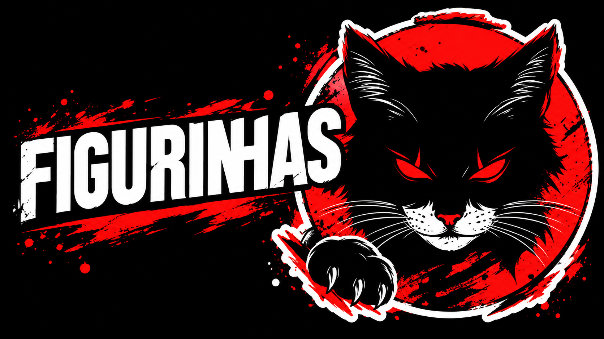
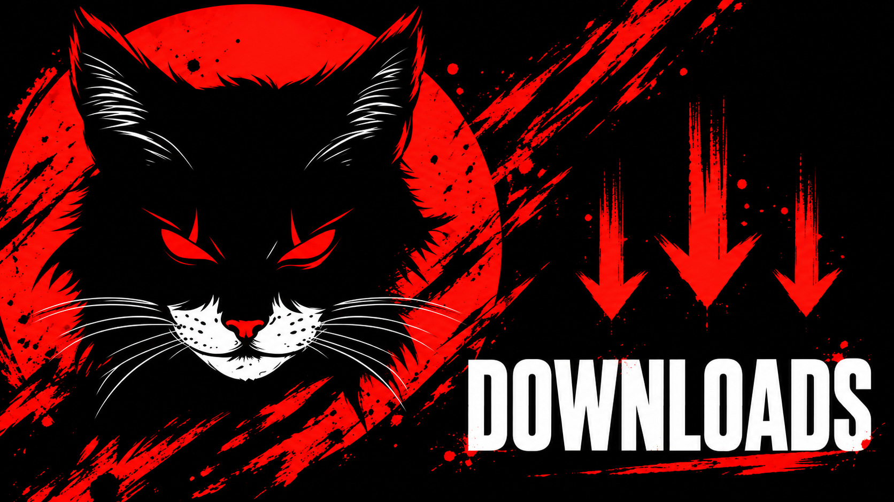

Administração de grupos
Configure regras, boas-vindas, proteções contra links e rotinas de moderação. As ações de administração respeitam os cargos do grupo e as permissões do bot.
BOT PARA WHATSAPP
Administre sua comunidade, crie figurinhas, baixe conteúdo e use os jogos do bot direto na conversa. Com comandos organizados e permissões para cada função.
Código aberto. Sua própria instância é gratuita.
As funções ficam separadas em menus. Você pode configurar o prefixo da sua instância e consultar os comandos disponíveis pelo WhatsApp.
Configure regras, boas-vindas, proteções contra links e rotinas de moderação. As ações de administração respeitam os cargos do grupo e as permissões do bot.
Consulte as opções de download, crie figurinhas e use ferramentas de áudio e imagem. Algumas funções precisam de uma integração configurada na instância.
Brincadeiras, rankings, RPG, NEXO e Tavern disponíveis em menus próprios. O grupo escolhe quais atividades quer usar.
Os novos menus trazem uma arte para cada categoria e organizam o texto para facilitar a consulta dos comandos no celular.


Membros, administradores, subdonos e donos têm níveis de acesso diferentes. O bot usa essas permissões para exibir os menus e autorizar cada comando.
Prévia ilustrativa. Use !menu no WhatsApp para consultar a sua instância.
╭━━━─〔 🐈⬛ SHOGUN 〕─━━━ ┃ MENU PRINCIPAL ┃ ┃ ▸ !menudown ┃ Downloads e mídia ┃ ▸ !menufig ┃ Figurinhas ┃ ▸ !menubn ┃ Brincadeiras ┃ ▸ !menurpg ┃ RPG e progressão ┃ ╰━━━─〔 SHOGUN 〕─━━━━O prefixo pode ser alterado na configuração.
Escolha a plataforma para abrir o tutorial. Você precisa de um dispositivo ou servidor ligado e de uma conta do WhatsApp para conectar o bot.
Git, Node.js e FFmpeg. O tutorial da sua plataforma mostra os requisitos e como instalar cada um.
Baixe e extraia o projeto. Execute npm start: as dependências são instaladas e a configuração pede nome do bot, número do dono, número do bot e chave BunnyFy opcional.
Inicie o bot e siga a conexão exibida no terminal. Com o processo ligado, teste o menu no WhatsApp.
O Shogun não tem mensalidade obrigatória. Servidor, hospedagem assistida e serviços de API são escolhas à parte.
No PowerShell, com os requisitos do guia instalados:
git clone https://github.com/dgreych/shogun.git
cd shogun
npm startO primeiro início pede configuração e conexão. O tutorial explica cada etapa, sem pular os requisitos.
Na atualização em implantação, conversa e escolha de modelo ficam disponíveis em todas as instâncias. Sem chave paga, a BunnyFy oferece 20 chamadas por dia para downloads, transcrição, geração de imagens e outros serviços. A contagem é feita na API e renova à meia-noite de Brasília. Para ampliar o uso, consulte uma assinatura.
Consultar acesso à API ↗Solicite uma proposta de hospedagem e configuração. Disponibilidade, suporte e valores são combinados no atendimento. Rodar a sua própria instância continua sendo gratuito.
Consultar hospedagem ↗Rodar sua própria instância do Shogun é gratuito. Você fornece o dispositivo ou servidor e mantém o processo ligado. Hospedagem assistida e serviços externos de API são opcionais e podem ter custos próprios.
Sim, no Android com Termux. Siga o guia específico, mantenha a sessão do terminal ativa e confira as orientações de bateria. No iPhone, use um servidor ou computador para hospedar o processo do bot.
Depois da configuração, inicie o bot e siga o QR ou código de conexão apresentado no terminal. Os tutoriais mostram o vínculo pelo menu de aparelhos conectados do WhatsApp.
Comece pelo guia de solução de problemas. Ele explica requisitos, instalação, conexão e os erros mais comuns. Para hospedagem e API, use o contato abaixo.
CONTATO
Para hospedagem, acesso à BunnyFy ou orientação sobre o Shogun, escolha o assunto e continue pelo WhatsApp.
+55 (22) 99702-8553 ↗